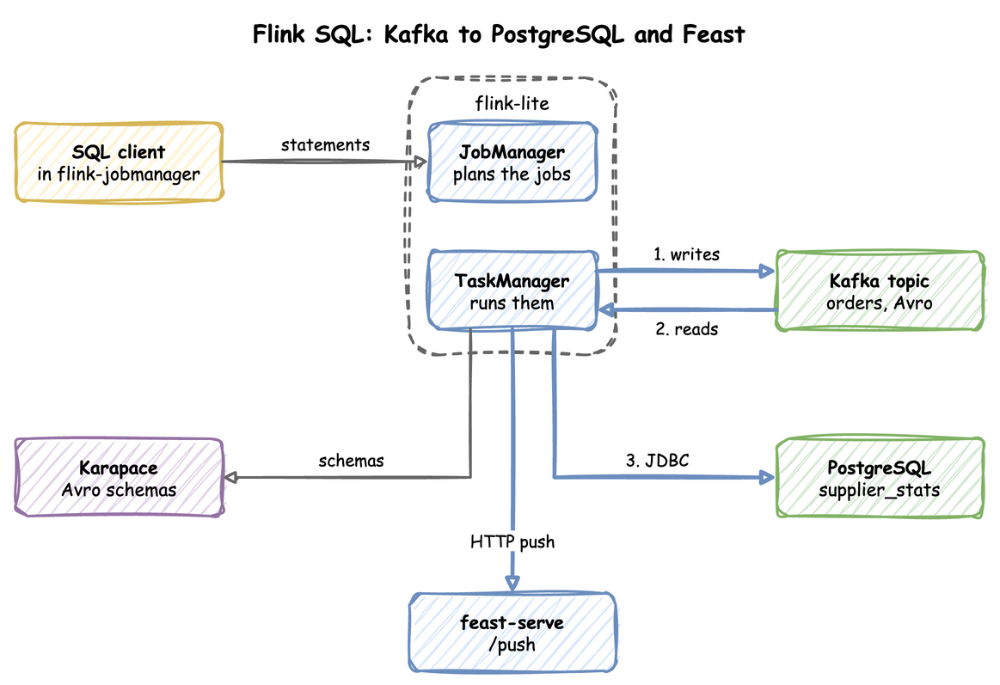
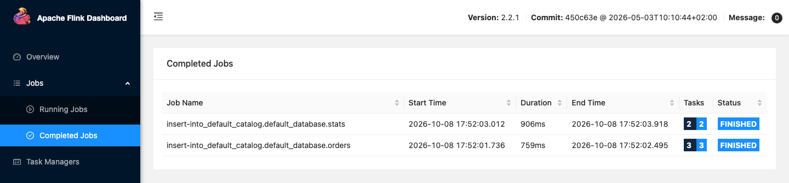

Flink SQL: Kafka to PostgreSQL
The flink-lite profile runs a Flink JobManager, one TaskManager and the SQL Gateway. flink-full runs three TaskManagers. Flink's connector jars for Kafka, Avro with the schema registry, JDBC, Iceberg and HTTP come from the shared volume that the deps profile fills. The end-to-end tests run the commands below on every release.
This guide reads Avro records from Kafka through the Karapace schema registry and writes an aggregate to PostgreSQL over JDBC. Ingest into Iceberg shows Flink writing an Iceberg table.

| odctl up flink-lite kafka-lite
|
flink-lite starts PostgreSQL itself, because it depends on the Iceberg catalog, which keeps its metadata there.
| Endpoint |
Address |
| Flink UI and REST API from the host |
http://127.0.0.1:8082 |
| SQL Gateway REST API from the host |
http://127.0.0.1:8084 |
Flink REST API inside the odctl network |
http://jobmanager:8081 |
SQL Gateway inside the odctl network |
http://flink-sql-gateway:8083 |
Create the topic and the target table
| docs/snippets/flink-sql/commands.sh:create-topic-table |
|---|
| docker exec kafka /opt/kafka/bin/kafka-topics.sh --bootstrap-server broker-1:19092 \
--create --if-not-exists --topic orders --partitions 1 --replication-factor 1
docker exec postgres psql -U user -d odctl -c "
CREATE TABLE supplier_stats (supplier TEXT PRIMARY KEY, orders BIGINT, total DOUBLE PRECISION);"
|
Run the SQL
Open the SQL client in the JobManager container:
| docs/snippets/flink-sql/commands.sh:sql-client |
|---|
| docker exec -it flink-jobmanager /opt/flink/bin/sql-client.sh
|
| docs/snippets/flink-sql/steps.sql:kafka-to-postgres |
|---|
| SET 'execution.runtime-mode' = 'batch';
SET 'table.dml-sync' = 'true';
CREATE TABLE orders (supplier STRING, price DOUBLE) WITH ('connector'='kafka','topic'='orders','properties.bootstrap.servers'='broker-1:19092','scan.startup.mode'='earliest-offset','scan.bounded.mode'='latest-offset','format'='avro-confluent','avro-confluent.url'='http://karapace:8081');
INSERT INTO orders VALUES ('a', 10.0), ('a', 5.0), ('b', 7.5);
CREATE TABLE stats (supplier STRING, orders BIGINT, total DOUBLE, PRIMARY KEY (supplier) NOT ENFORCED) WITH ('connector'='jdbc','url'='jdbc:postgresql://postgres:5432/odctl','table-name'='supplier_stats','username'='user','password'='password');
INSERT INTO stats SELECT supplier, COUNT(*), SUM(price) FROM orders GROUP BY supplier;
|
The first INSERT writes three Avro records to Kafka and registers their schema in Karapace. The second reads them back, groups them by supplier and writes the result to PostgreSQL. scan.bounded.mode set to latest-offset makes the Kafka source stop at the end of the topic, so the batch job finishes. Leave it out and set execution.runtime-mode to streaming for a job that keeps running.
Right after Kafka starts, Karapace can answer its health check and still time out on a schema write for a short while. If the first INSERT fails on the schema registry, run it again.
Check the result
| docs/snippets/flink-sql/commands.sh:check |
|---|
| docker exec postgres psql -U user -d odctl -c "SELECT * FROM supplier_stats ORDER BY supplier"
|
Supplier a has 2 orders totalling 15, and supplier b has 1 order totalling 7.5. The Flink UI at http://127.0.0.1:8082 shows the jobs the SQL client submitted.
The two INSERT statements run as two batch jobs, listed under Completed Jobs.

Send rows to an HTTP API
The HTTP connector sends rows to a URL. This section pushes a feature value to Feast, which takes it at /push and serves it from its online store.
Feast needs a push source before it accepts a push. Save these definitions as definitions.py:
| docs/snippets/flink-sql/definitions.py |
|---|
| from datetime import timedelta
from feast import Entity, FeatureView, Field, FileSource, PushSource
from feast.types import Float32, Int64
from feast.value_type import ValueType
driver = Entity(name="driver", join_keys=["driver_id"], value_type=ValueType.INT64)
# Nothing reads this file. A push source needs a batch source behind it.
batch = FileSource(path="/tmp/driver_stats.parquet", timestamp_field="event_timestamp")
push = PushSource(name="driver_stats_push", batch_source=batch)
driver_stats = FeatureView(
name="driver_stats",
entities=[driver],
ttl=timedelta(days=1),
schema=[Field(name="driver_id", dtype=Int64), Field(name="conv_rate", dtype=Float32)],
source=push,
online=True,
)
|
Copy the definitions into the Feast container and apply them. --skip-source-validation stops Feast from looking for the file behind the batch source:
| docs/snippets/flink-sql/commands.sh:feast-apply |
|---|
| docker cp definitions.py feast-serve:/tmp/feature_repo/definitions.py
docker exec feast-serve feast -c /tmp/feature_repo apply --skip-source-validation
|
Open the SQL client as above and run these statements:
| docs/snippets/flink-sql/steps.sql:feast-push |
|---|
| SET 'execution.runtime-mode' = 'batch';
SET 'table.dml-sync' = 'true';
CREATE TABLE feast_push (
push_source_name STRING,
df ROW<driver_id ARRAY<BIGINT>, conv_rate ARRAY<DOUBLE>, event_timestamp ARRAY<TIMESTAMP_LTZ(3)>>,
allow_registry_cache BOOLEAN
) WITH (
'connector' = 'http-async-sink',
'url' = 'http://feast-serve:6566/push',
'format' = 'json',
'http.sink.writer.request.mode' = 'single',
'http.sink.header.Content-Type' = 'application/json'
);
INSERT INTO feast_push SELECT 'driver_stats_push', ROW(ARRAY[CAST(1001 AS BIGINT)], ARRAY[CAST(0.9 AS DOUBLE)], ARRAY[CURRENT_TIMESTAMP]), FALSE;
|
The connector is http-async-sink. Its default sends rows in batches as one JSON array. Feast's /push takes one JSON object, so http.sink.writer.request.mode is single, which sends one request for each row. The sink sends no Content-Type header, and Feast answers 422 without one, so http.sink.header.Content-Type sets it. The column names are the field names of the request body. Feast reads df as a table of columns, so each field holds an array.
Feast caches its registry for up to a minute after apply. allow_registry_cache set to FALSE makes the push read the registry again, so it works at once. The timestamp must be new: a push with the same event_timestamp as the stored value does not replace it, so the statement uses CURRENT_TIMESTAMP.
The Flink job finishes and prints Complete execution even when Feast rejects the request. The failure is only in the TaskManager log as Http Sink failed to write. Read the value back from Feast to check the push:
| docs/snippets/flink-sql/commands.sh:feast-read |
|---|
| curl -s -X POST http://127.0.0.1:6566/get-online-features \
-H 'Content-Type: application/json' \
-d '{"features": ["driver_stats:conv_rate"], "entities": {"driver_id": [1001]}}'
|
The answer holds 0.8999999761581421 for conv_rate, which is 0.9 as a 32-bit float. The read also uses the cached registry, so right after apply it can answer that the feature view does not exist. Run it again after a minute.
Several rolling windows
A feature such as the sum of a card's payments over 10 minutes, 1 hour and 1 day needs one rolling window for each size. A streaming query cannot hold two different OVER windows. Flink's documentation says that for streaming queries the OVER windows of all aggregates in one SELECT must be identical (Over aggregation, Flink 2.2). Run this in the SQL client to see Flink refuse a query with a 10 minute and a 1 hour window:
| docs/snippets/flink-sql/steps.sql:windows-refused |
|---|
| SET 'execution.runtime-mode' = 'streaming';
CREATE TABLE payments (card BIGINT, amount DOUBLE, seq BIGINT, ts AS TO_TIMESTAMP_LTZ(seq * 60000, 3), WATERMARK FOR ts AS ts) WITH ('connector'='datagen','fields.seq.kind'='sequence','fields.seq.start'='1','fields.seq.end'='20','fields.card.min'='1','fields.card.max'='2','fields.amount.min'='1','fields.amount.max'='10');
SELECT card,
SUM(amount) OVER (PARTITION BY card ORDER BY ts RANGE BETWEEN INTERVAL '10' MINUTE PRECEDING AND CURRENT ROW) AS sum_10m,
SUM(amount) OVER (PARTITION BY card ORDER BY ts RANGE BETWEEN INTERVAL '1' HOUR PRECEDING AND CURRENT ROW) AS sum_1h
FROM payments;
|
The client prints [ERROR] Could not execute SQL statement. with this reason:
| org.apache.flink.table.api.TableException: Over Agg: Unsupported use of OVER windows. All aggregates must be computed on the same window. please re-check the over window statement.
|
The first route is one statement for each window size, each writing its own table. Create the two PostgreSQL tables:
| docs/snippets/flink-sql/commands.sh:create-window-tables |
|---|
| docker exec postgres psql -U user -d odctl -c "
CREATE TABLE card_sum_10m (card BIGINT, amount_sum DOUBLE PRECISION);
CREATE TABLE card_sum_1h (card BIGINT, amount_sum DOUBLE PRECISION);"
|
Then run the two statements in a new SQL client session. The sequence field makes the source stop after 20 rows, and the event time ts makes each job write every row before it finishes. An OVER window on PROCTIME() would lose the rows still waiting for their timer when a bounded source ends:
| docs/snippets/flink-sql/steps.sql:windows-one-per-size |
|---|
| SET 'execution.runtime-mode' = 'streaming';
SET 'table.dml-sync' = 'true';
CREATE TABLE payments (card BIGINT, amount DOUBLE, seq BIGINT, ts AS TO_TIMESTAMP_LTZ(seq * 60000, 3), WATERMARK FOR ts AS ts) WITH ('connector'='datagen','fields.seq.kind'='sequence','fields.seq.start'='1','fields.seq.end'='20','fields.card.min'='1','fields.card.max'='2','fields.amount.min'='1','fields.amount.max'='10');
CREATE TABLE sum_10m (card BIGINT, amount_sum DOUBLE) WITH ('connector'='jdbc','url'='jdbc:postgresql://postgres:5432/odctl','table-name'='card_sum_10m','username'='user','password'='password');
CREATE TABLE sum_1h (card BIGINT, amount_sum DOUBLE) WITH ('connector'='jdbc','url'='jdbc:postgresql://postgres:5432/odctl','table-name'='card_sum_1h','username'='user','password'='password');
INSERT INTO sum_10m SELECT card, SUM(amount) OVER (PARTITION BY card ORDER BY ts RANGE BETWEEN INTERVAL '10' MINUTE PRECEDING AND CURRENT ROW) FROM payments;
INSERT INTO sum_1h SELECT card, SUM(amount) OVER (PARTITION BY card ORDER BY ts RANGE BETWEEN INTERVAL '1' HOUR PRECEDING AND CURRENT ROW) FROM payments;
|
Each table holds 20 rows:
| docs/snippets/flink-sql/commands.sh:check-windows |
|---|
| docker exec postgres psql -U user -d odctl -c "
SELECT (SELECT count(*) FROM card_sum_10m) AS rows_10m, (SELECT count(*) FROM card_sum_1h) AS rows_1h"
|
The cost is one job for each window size, each reading the source again, and one table for each size that a reader has to join on the key. With four sizes that is four jobs.
The second route is one KeyedProcessFunction in the DataStream API, which keeps the events of the longest window in Flink state and computes every size from them. This sketch is not run by the end-to-end tests:
| docs/snippets/flink-sql/keyed_sketch.py:keyed-sketch |
|---|
| from pyflink.common import Types
from pyflink.datastream.functions import KeyedProcessFunction, RuntimeContext
from pyflink.datastream.state import ListStateDescriptor
WINDOWS_MS = {"10m": 600_000, "1h": 3_600_000, "1d": 86_400_000, "7d": 604_800_000}
class RollingSums(KeyedProcessFunction):
def open(self, runtime_context: RuntimeContext):
# Every event of the longest window, for each key, kept in Flink state.
self.events = runtime_context.get_list_state(
ListStateDescriptor("events", Types.TUPLE([Types.LONG(), Types.DOUBLE()]))
)
def process_element(self, value, ctx):
now = ctx.timestamp()
kept = [(t, a) for t, a in self.events.get() if now - t <= WINDOWS_MS["7d"]]
kept.append((now, value[1]))
self.events.update(kept)
yield value[0], {n: sum(a for t, a in kept if now - t <= ms) for n, ms in WINDOWS_MS.items()}
|
One job computes all sizes, but you write and test the code in Python or Java instead of SQL, and you manage the state, which grows with the events of the longest window for each key.
From another container
Inside the odctl network, Flink's REST API is http://jobmanager:8081 and the SQL Gateway is http://flink-sql-gateway:8083. In Flink SQL, Kafka is broker-1:19092, Karapace is http://karapace:8081 and PostgreSQL is jdbc:postgresql://postgres:5432/odctl.